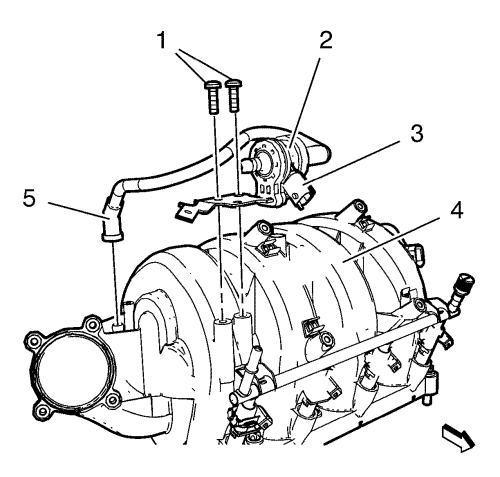
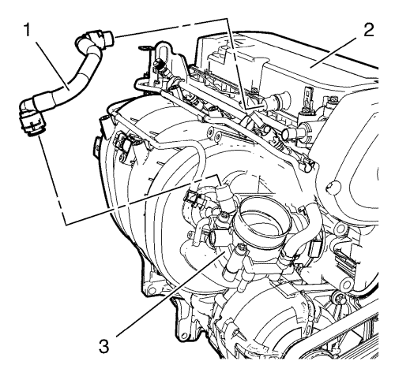
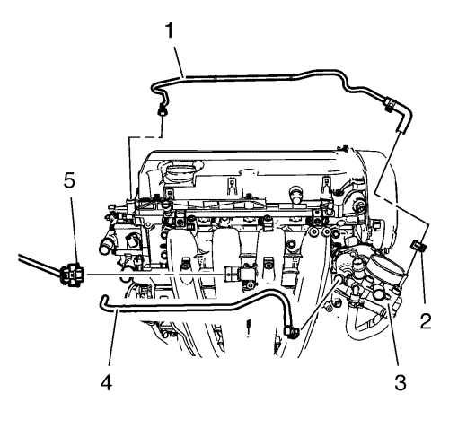
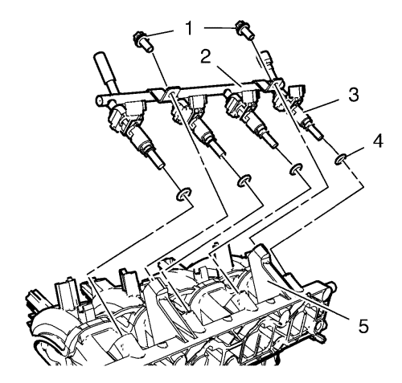
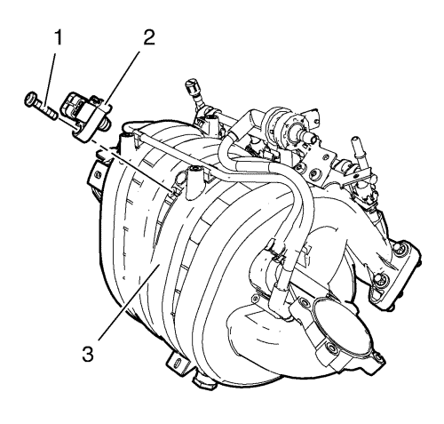
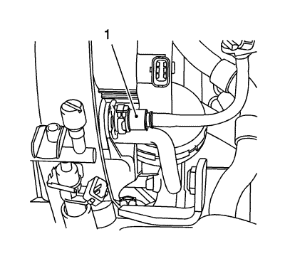
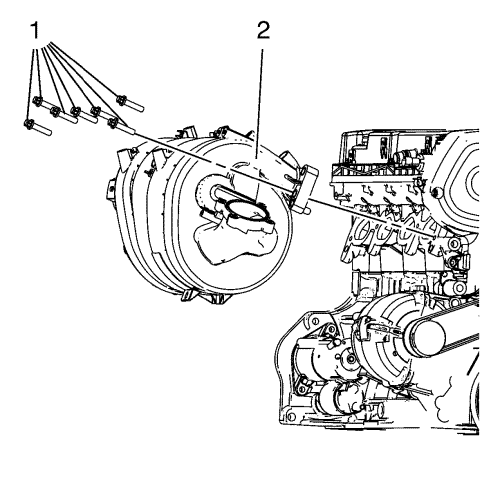
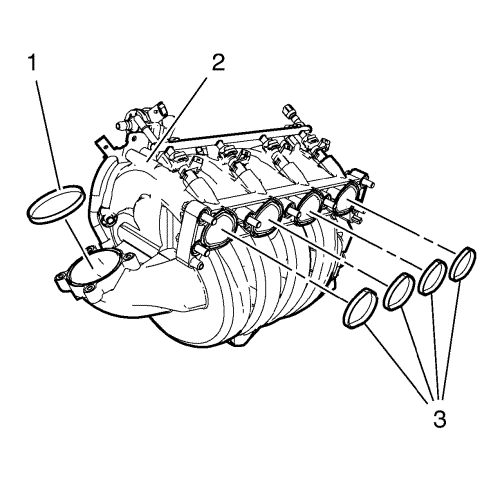
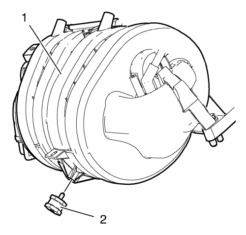

Sustitución del colector de admisión 1.8L 2H0
Procedimiento de desmontaje
- Abra el capó.
- Retire el conducto de salida del purificador de aire. Consultar
Sustitución del conducto de salida del filtro de aire : 1.6L LDE, LXV y 1.8L 2H0 .
- Suba el vehículo a la altura máxima. Consultar Elevación y soporte en alto del vehículo .
- Coloque debajo una bandeja de goteo.

- Retire los 2 tornillos (2, 3) de anclaje del colector de admisión.
- Desmonte y desconecte el enchufe del mazo de cables de la sonda Lambda calentada 1.
- Desmonte el anclaje del colector de admisión (1).
- Baje el vehículo a la altura máxima.

- Desconecte el enchufe del mazo de cables (3).
- Desconecte el tubo (5) que va de la válvula solenoide de purga del depósito antiimpurezas de emisión de vapores (2) al colector de admisión (4).
- Retire los 2 tornillos del soporte del depósito antiimpurezas de emisión de vapores (1)
- Desmonte la válvula solenoide de purga del depósito antiimpurezas de emisión de vapores (2) y el soporte de goma del colector de admisión (4).

- Retire el tubo de ventilación positiva de la carcasa del cigüeñal (1) del cuerpo de la mariposa (3) y la tapa del árbol de levas (2).
- Desmonte el conjunto del cuerpo de la mariposa. Consultar
Sustitución del conjunto del cuerpo de la mariposa : 1.6L LDE, LXV y 1.8L 2H0 .

- Desconecte el enchufe del mazo de cables del sensor de presión absoluta del colector (5).
- Desmonte la abrazadera de fijación (2) y retire el tubo flexible de entrada del calefactor (1) del cuerpo de la mariposa (3).
- Desconecte el tubo flexible de salida del calefactor del cuerpo de la mariposa (4) del cuerpo de la mariposa (3).
- Desmonte el mazo de cables del sistema de gestión del motor y el mazo de cables de los inyectores de combustible.

- Desmonte los 2 tornillos del tubo de distribución de inyección de combustible multipuerto (1).
- Extraiga el tubo de distribución de inyección de combustible multipuerto (2) y los inyectores de combustible (4) del colector de admisión (5).
- Desmonte las 4 juntas de los inyectores de combustible multipuerto (4).

- Extraiga el tornillo del sensor de presión absoluta del colector (1).
- Extraiga el sensor de presión absoluta del colector (2).

- Desconecte el tubo de depresión de refuerzo (1) del colector de admisión.

- Retire los 7 tornillos (1) del colector de admisión.
- Desmonte el colector de admisión (2).

- Desmonte las juntas del colector de admisión (1, 2, 3).

- Retire el soporte de goma (2) del colector de admisión (1).
Procedimiento de limpieza e inspección
Limpie e inspeccione el colector de admisión. Consultar
Limpieza y comprobación del colector de admisión : 1.6L LDE, LXV y 1.8L 2H0 .
Procedimiento de montaje
- Limpie las superficies de sellado.
- Monte el soporte de goma (2) en el colector de admisión (1).
- Monte las juntas NUEVAS (1, 2, 3).
Precaución:Consulte Precaución con las fijaciones en la sección Prólogo.
- Monte el colector de admisión (2) y los 7 tornillos del colector de admisión (1), y apriételos a 20 N·m (15 lib. pie).
- Conecte el tubo de depresión de refuerzo (1) en el colector de admisión.
- Monte el sensor de presión absoluta del colector (2).
- Monte el tornillo del sensor de presión absoluta del colector (1) y apriételo a 6 N·m (54 lib. pulg.).
- Monte las 4 juntas de los inyectores de combustible multipuerto (4).
- Monte el tubo de distribución de inyección de combustible multipuerto (4) y los inyectores de combustible (3) del colector de admisión (5).
- Monte los 2 tornillos del tubo de distribución de inyección de combustible multipuerto (1) y apriételos a 8 N·m (71 lib. pulg.).
- Conecte el tubo flexible de salida del calefactor del cuerpo de la mariposa (4) al cuerpo de la mariposa (3).
- Monte el tubo flexible de entrada del calefactor del cuerpo de la mariposa (1) en el cuerpo de la mariposa (3) y monte la abrazadera (2).
- Conecte el enchufe del mazo de cables del sensor de presión absoluta del colector (5).
- Monte el mazo de cables del sistema de gestión del motor y el mazo de cables de los inyectores de combustible.
- Monte el tubo de ventilación positiva de la carcasa del cigüeñal (1) en el cuerpo de la mariposa (3) y en la tapa del árbol de levas (2).
- Monte el conjunto del cuerpo de la mariposa. Consultar
Sustitución del conjunto del cuerpo de la mariposa : 1.6L LDE, LXV y 1.8L 2H0 .
- Monte la válvula solenoide de purga del depósito antiimpurezas de emisión de vapores (2) y el soporte de goma en el colector de admisión (4).
- Monte los 2 tornillos del soporte del depósito antiimpurezas de emisión de vapores (1) y apriételos a 8 N·m (71 lib. pulg.).
- Conecte el tubo (5) que va de la válvula solenoide de purga del depósito antiimpurezas de emisión de vapores (2) al colector de admisión (4).
- Conecte el enchufe del mazo de cables (3).
- Suba el vehículo a la altura máxima.
- Monte el anclaje del colector de admisión (1).
- Monte y desconecte el enchufe del mazo de cables de la sonda Lambda calentada 1.
- Coloque los 2 tornillos del anclaje del colector de admisión (2, 3) y apriételos a 8 N·m (71 lib. pulg.).
- Baje el vehículo a la altura máxima.
- Monte el conducto de salida del filtro de aire. Consultar
Sustitución del conducto de salida del filtro de aire : 1.6L LDE, LXV y 1.8L 2H0 .
- Cierre el capó.
| © Copyright Chevrolet. Reservados todos los derechos |